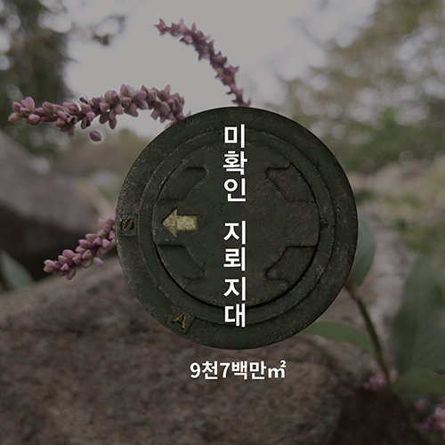
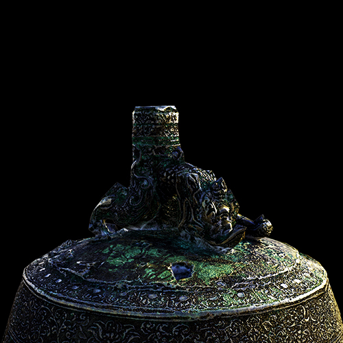

Web Design Studio 미확인 지뢰지대
부산, 울산등 없을 것이라 생각한 대도시 주변과 공사 현장 그리고
다니던 길에서 지뢰가 발견되기도 하고 마을 안, 매일 다니던 길에서도
지뢰가 발견되어 사고가 나며 나의 주변에도 생각지도 못한
위험이 있다는 것을 알게 되어 제작을 해 보게 되었다.

Multimedia Design PETTOPIA
펫토피아는 APP과 연동하여 운영되는 신개념 유기보 호시설이다.
기존의 보호소는 위생·건강·시공간 제 약에 따른 재파양 문제 등 수많은 문제점을 안고있다.
우리는 이러한 문제점을 파악하여 유기견과 많은 시간 을 함께 보낼 수 있는 ‘시니어’들과 유기견을 매칭,
공 간을 쉐어하여 하나의 문화시설로 작용. 시니어와 유 기견 모두의 인식 개선에 이바지하길 바라며 펫토피아 를 기획하게 되었다.

Moving Image Animation 성덕대왕신종
국보 제29호. 경덕왕이 아버지인 성덕왕의 공덕을 널리 알리기 위해 종을
만들고자 하였으나 완성은 혜공왕 때인 771년에 이루어졌다. 우리나라에
남아 있는 최대의 거종으로서 제작 연대가 확실하고 각 부의 양식이 풍요
한 동종의 하나이다. 통일신라시대 범종을 대표한다